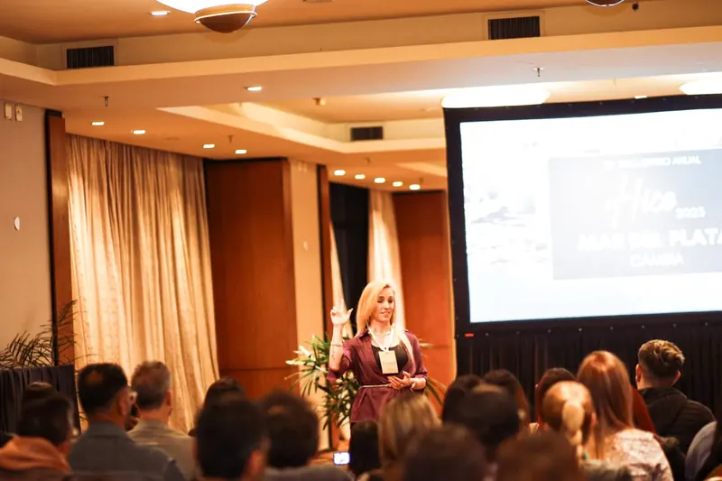

Encargados que resuelven sin llamarte
Capacitación para gerentes, encargados y supervisores de tu negocio: liderazgo, comunicación y gestión con números.
- ParaEncargados y supervisores
- GrupoHasta 8 personas
- FormatoPara tu equipo o abierto
- DóndeMar del Plata u online
Sin cargo, por WhatsApp. Te responde una persona del equipo.

Lo que cambia en tu equipo
El encargado maneja el conflicto
Hoy: cada conflicto del equipo termina en vos.
Las expectativas están claras
Hoy: nadie sabe bien qué se espera de él.
Una reunión corta ordena la semana
Hoy: las reuniones no ordenan nada.
El feedback es directo y a tiempo
Hoy: el encargado esquiva las conversaciones difíciles.
El equipo decide con criterio propio
Hoy: si no estás, las decisiones se frenan.
Tres módulos
Para gerentes de área, encargados, supervisores y las personas que querés proyectar como líderes.
Mentalidad de líder
De hacer bien las cosas a lograr que otros las hagan bien. Rol, estilos de liderazgo y autoridad ganada.
Comunicación y feedback
Expectativas claras, feedback con el modelo SBI, conversaciones difíciles y una reunión semanal corta.
Gestión con números
Delegar con seguimiento, prioridades, los números del área, conflictos y un plan de liderazgo propio.
- IncluyeKit digital y plantillas
- Entre sesionesGrupo de WhatsApp
- DespuésSeguimiento del plan
- Se mideCuánto te consultan menos
Dos formas de hacerlo
Para tu equipo
Solo con tu gente
El contenido se adapta a tu negocio, tu cultura y tus problemas. Conviene si tenés dos o más líderes para formar.
Programa abierto
Con líderes de otros negocios
Suma otras miradas y una red de contactos. Conviene si tenés un solo líder para formar.
“El trabajo en grupo fomentó la comunicación y la colaboración entre todos nosotros.”
Cómo se empieza
Empieza con una conversación con vos
-
Conversación de diagnóstico
Con vos, el dueño: qué pasa hoy en el equipo y qué tendría que cambiar.
-
Elegimos quiénes participan
Juntos definimos qué encargados o líderes conviene formar primero.
-
Propuesta de Acompañamiento
Formato, grupo y acuerdos claros, por escrito.
Preguntas frecuentes
¿Participa el dueño?
El C·D·E es para tus encargados. Vos participás en la conversación de diagnóstico y en el seguimiento.
¿Se puede hacer online?
Sí. Hay grupos presenciales en Mar del Plata, online o combinados.
¿Cuánto cuesta?
La conversación de diagnóstico es sin cargo. Si después trabajamos juntos, el valor depende del programa y del tamaño del negocio, y queda escrito en la Propuesta de Acompañamiento.
Contanos cómo está tu equipo
Empezamos por una conversación con vos y armamos el grupo que tu negocio necesita.